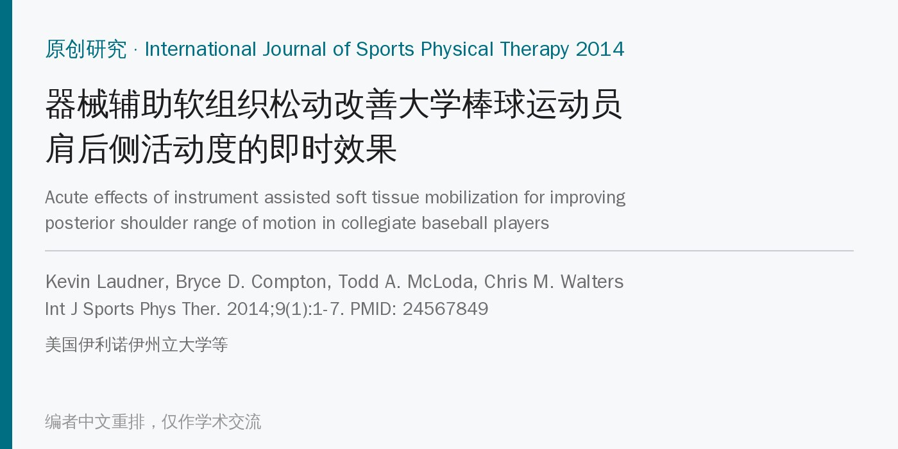
🔖原文信息（编者中文重排）
📚 文献信息
▪ Laudner K, Compton BD, McLoda TA, Walters CM. Acute effects of instrument assisted soft tissue mobilization for improving posterior shoulder range of motion in collegiate baseball players. Int J Sports Phys Ther. 2014;9(1):1-7. PMID: 24567849
▪ 中文题目：器械辅助软组织松动改善大学棒球运动员肩后侧活动度的即时效果
▪ 作者来自美国伊利诺伊州立大学等机构，通讯作者 Kevin G. Laudner
▪ 研究类型：随机对照试验（单次干预、即时前后测），作者自评证据等级 2b
• 投球减速期，肩后侧结构反复承受很大的旋转和牵拉力；长期下来，棒球运动员投掷臂常出现外旋增大、内旋和水平内收减少，也就是常说的“肩后侧紧张”
• 肩后侧紧张和多种投掷肩损伤有关；以往试过睡姿牵伸、水平内收牵伸、肌肉能量技术等，效果不一
• 器械辅助软组织松动（IASTM，如 Graston 技术）用不锈钢器械在皮肤上刮动，临床上常用于软组织受限，但当时还没有研究看它对盂肱关节活动度的作用
• 作者假设：一次器械松动后，被动水平内收和内旋会比对照组即时增加
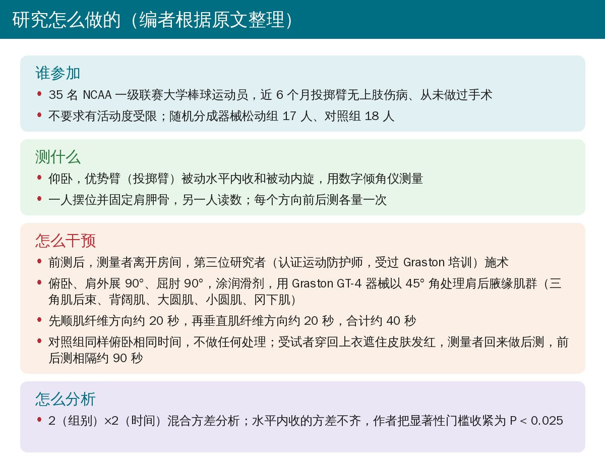
🔖编者根据原文整理
• 受试者：35 名 NCAA 一级联赛大学棒球运动员，无症状、不要求有活动度受限，随机分为器械松动组 17 人、对照组 18 人
• 测量：仰卧、肩外展 90°、屈肘 90°，一人固定肩胛骨并被动活动到终末，另一人用数字倾角仪读数；事先检验的同测者信度：水平内收 ICC 0.93、SEM 1.6°，内旋 ICC 0.98、SEM 2.0°
• 干预：俯卧同样体位，Graston GT-4 器械以约 45° 角在肩后腋缘（三角肌后束、背阔肌、大圆肌、小圆肌、冈下肌）先顺纤维、再横纤维各刮约 20 秒，共约 40 秒；对照组俯卧同样时间、不做处理
• 盲法：施术时测量者离开房间，受试者穿回上衣遮住皮肤发红；前后测相隔约 90 秒
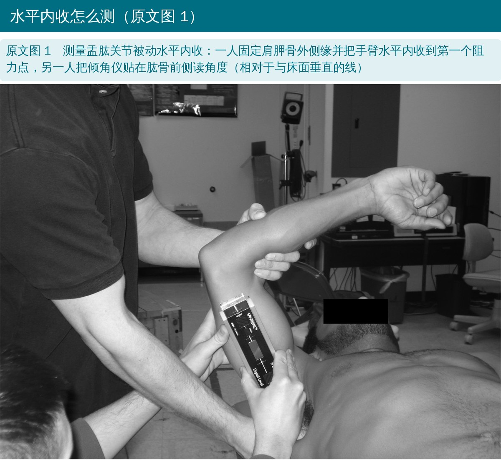
🔖原文图 1（照片内无文字，图注由编者翻译）
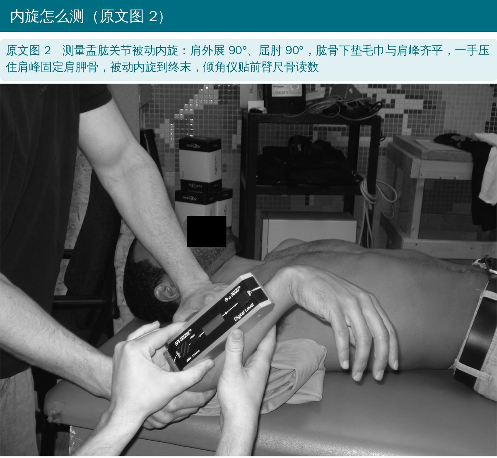
🔖原文图 2（照片内无文字，图注由编者翻译）
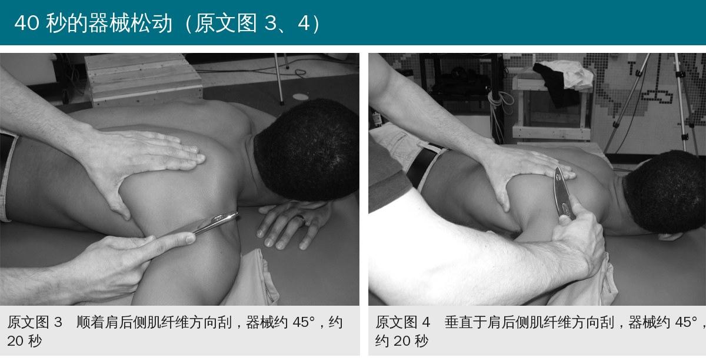
🔖原文图 3、图 4（照片内无文字，图注由编者翻译）
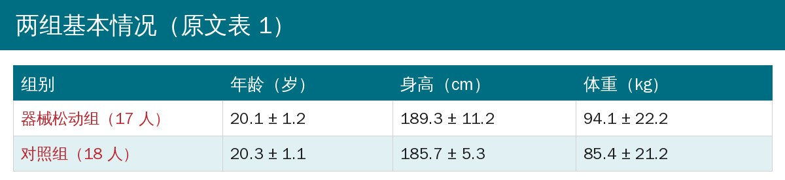
🔖原文表 1（编者翻译重排）
• 水平内收：器械松动组从 -10.9° 增加到 0.2°，平均 +11.1°；对照组 -0.12°（组×时间交互 P < 0.001，F = 77.4，偏 η² = 0.7）
• 内旋：器械松动组从 42.4° 增加到 47.2°，平均 +4.8°；对照组 -0.14°（P < 0.001，F = 12.7，偏 η² = 0.3）
• 水平内收的方差不齐，作者把显著性门槛收紧到 P < 0.025，两项结果仍然显著
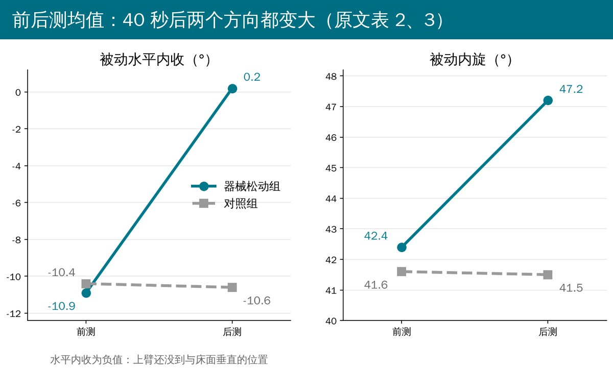
🔖编者根据原文表 2、表 3 绘制
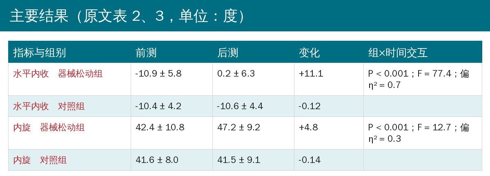
🔖原文表 2、表 3（编者翻译合并）
• 这是第一项显示短时器械松动能即时增加棒球运动员盂肱关节水平内收和内旋的研究
• 改善幅度超过测量的标准误（SEM），作者认为具有临床意义；与睡姿牵伸（+2.3°、+3.1°）和肌肉能量技术（+6.8°、+4.2°）的既往结果“相似”
• 可能机制：器械造成局部微损伤和炎症反应，重新启动修复过程（这是机制假说，本研究没有测）
• 作者承认的局限：用了固定方案而非个体化治疗、只用一种器械和一个体位、只看即时效果；建议研究多次治疗、有活动度缺失的人群和长期效果
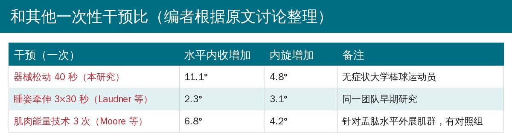
🔖编者根据原文讨论整理
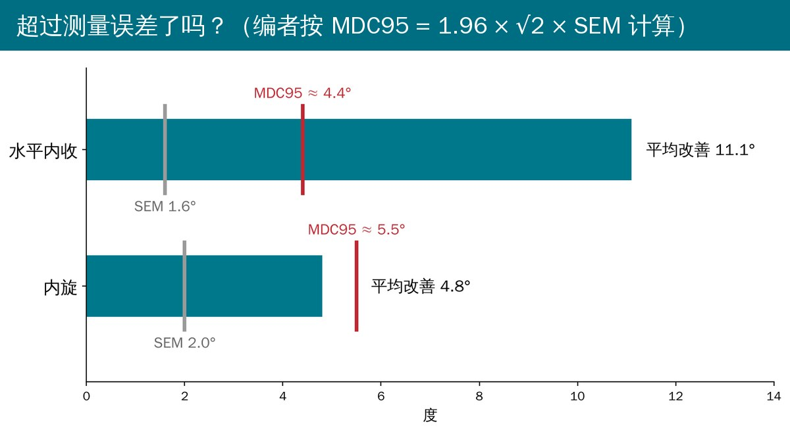
🔖编者计算
• 水平内收的改善比较可信：11.1° 远高于按原文 SEM 算出的最小可检测变化（MDC95 约 4.4°），对照组几乎不变
• 内旋的改善要打折扣：4.8° 低于 MDC95（约 5.5°），单个人测出这样的变化，可能就在测量误差之内；作者用“超过 SEM”判断临床意义，门槛偏低
• 没有安慰对照：对照组只是躺着，受试者知道自己被处理过，期待效应和皮肤刺激带来的放松无法和器械本身的作用分开
• 只看了 90 秒后：维持多久、多次治疗是否累积、对肩痛或投球表现有没有影响，全都不知道
• 样本小且无症状：35 名健康运动员，结论不能直接外推到有肩后侧紧张或肩痛的病人
• 报告不完整：没写随机方法、刮的次数和力度、基线比较；器械松动组身高、体重的离散度明显更大
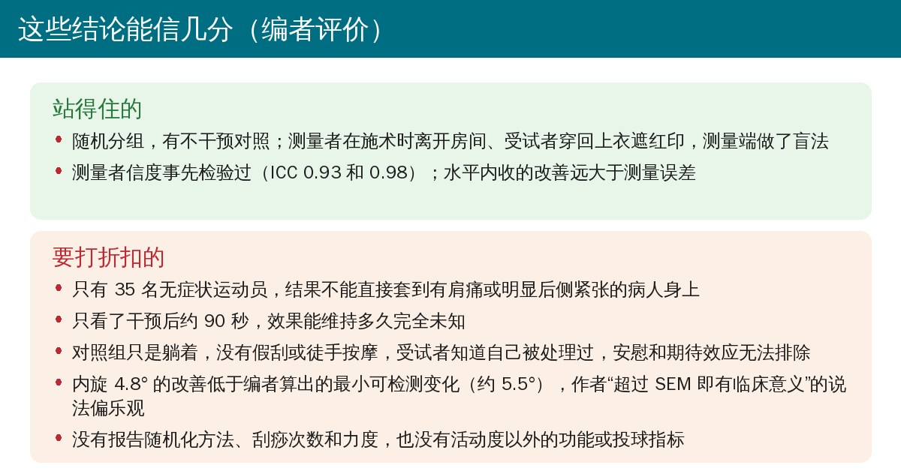
🔖编者评价
• “小到中等”效应量：作者称偏 η² 0.7 和 0.3 是“small to moderate”，按常用标准（0.14 即为大效应）两者都属于大效应
• 显著性门槛前后不一：方法和摘要写 α = 0.05，结果部分改成 P < 0.025
• 对照组变化的小数位：摘要和表 2、表 3 写 -0.12°、-0.14°，结果正文写 -0.1°；按表中均值算是 -0.2° 和 -0.1°
• “盲法随机设计”说法偏宽：只有测量者在施术时回避，受试者和施术者都不盲，也没写随机方法
• 信度检验和正式测量不是一回事：信度是“单一检查者”间隔 48 小时复测得到的，正式测量却由两人配合（一人摆位、一人读数）、间隔 90 秒
• 与既往研究“相似”：本研究水平内收 +11.1°，是睡姿牵伸（+2.3°）的近 5 倍，用“相似”形容并不准确
• 引用错位：“Aspegren 等 23 治疗排球运动员肋软骨炎”应为参考文献 16（文献 23 是一篇脊椎按摩治疗颈腰痛的回顾性研究）；“基于 Cyriax 深部摩擦按摩理论 21”引的是 Hammer 和 Pfefer 的个案，而不是 Cyriax 本人
• 用词不统一：题目和正文是 instrument assisted soft tissue mobilization，表格缩写说明写成 Instrumented soft tissue mobilization；“standarized”为笔误
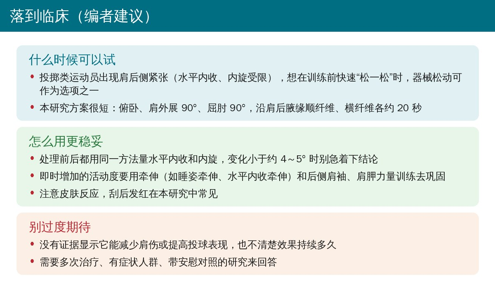
🔖编者建议
• 定位：器械松动可以作为投掷运动员肩后侧紧张的即时“松解”选项，尤其是训练或投球前想快速改善水平内收时
• 先量再做、做完再量：用同一方法测水平内收和内旋；内旋变化在 5° 以内时，别急着认定有效
• 趁热巩固：刮完后马上接水平内收牵伸、睡姿牵伸和后侧肩袖、肩胛稳定训练，单靠器械不太可能带来持久改变（编者观点）
• 注意皮肤：使用润滑剂，刮后发红常见；有皮肤破损、凝血问题等情况时慎用（编者观点）
• 别过度承诺：目前这篇研究不能说明器械松动能预防肩伤或提高球速
原文表 1 受试者特征（均值 ± 标准差）
| 组别 | 年龄（岁） | 身高（cm） | 体重（kg） |
|---|---|---|---|
| 器械松动组（n = 17） | 20.1 ± 1.2 | 189.3 ± 11.2 | 94.1 ± 22.2 |
| 对照组（n = 18） | 20.3 ± 1.1 | 185.7 ± 5.3 | 85.4 ± 21.2 |
原文表 2 盂肱关节水平内收活动度（度，均值 ± 标准差）
| 组别 | 前测 | 后测 | 变化 | P 值 |
|---|---|---|---|---|
| 器械松动组 | -10.9 ± 5.8 | 0.2 ± 6.3 | +11.1† | < 0.001 |
| 对照组 | -10.4 ± 4.2 | -10.6 ± 4.4 | -0.12 |
原文表 3 盂肱关节内旋活动度（度，均值 ± 标准差）
| 组别 | 前测 | 后测 | 变化 | P 值 |
|---|---|---|---|---|
| 器械松动组 | 42.4 ± 10.8 | 47.2 ± 9.2 | +4.8† | < 0.001 |
| 对照组 | 41.6 ± 8.0 | 41.5 ± 9.1 | -0.14 |
† 与前测相比活动度增加（P < 0.025）。原文表格在 PDF 中为图片，编者按原值重排
欢迎关注骨科康复小黄公众号，获取更多物理治疗的专业知识！
📄参考文献：
Laudner K, Compton BD, McLoda TA, Walters CM. Acute effects of instrument assisted soft tissue mobilization for improving posterior shoulder range of motion in collegiate baseball players. Int J Sports Phys Ther. 2014;9(1):1-7.（PubMed：24567849；PubMed Central：PMC3924602）
本文为中文解读，仅作学术交流：原文图 1～图 4 引自原文（照片内无文字，图注由编者翻译）；表 1～表 3 由编者翻译重排，研究流程、前后测图、测量误差图、对照表和评价卡为编者根据原文整理。原文版权归 Sports Physical Therapy Section 所有。